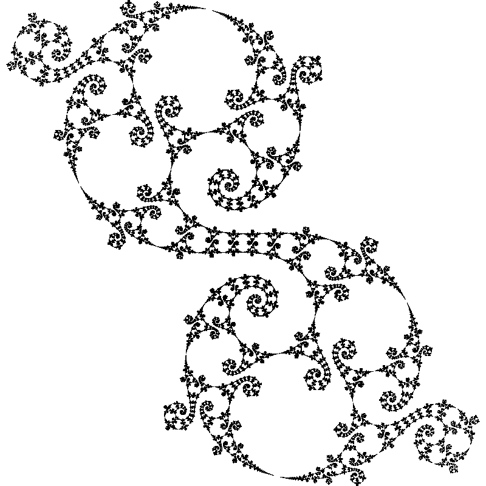
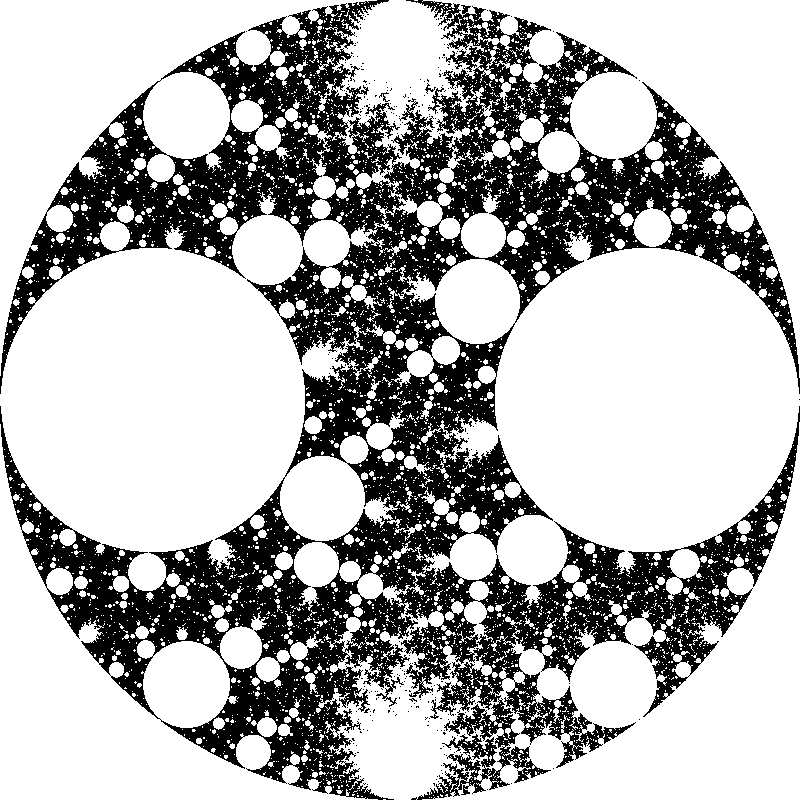
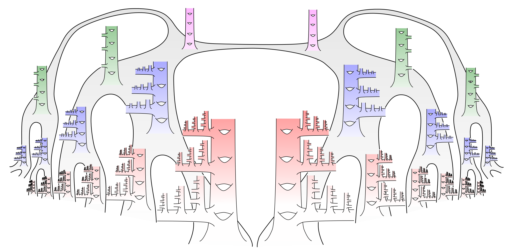

| time | week 1 | week 2 | week 3 | week 4 |
|---|
| 9 AM | |||
| 10 AM | |||
| Noon | |||
Better sleep through modeling (Olivia Walch, MTW
What happens if we come up with math models to describe the phenomena of human sleep and
circadian rhythms? What if we hook these models up to people’s wearables and run them on phones?
What if we use the models to compute what people should do during the day to sleep better at night?
(Will people accept math as their sleep savior??)
Class format: Slides, mostly lecture
Prerequisites: Must have experience sleeping
Chilis:
Class Actions:
Themes:
Better sheep through modeling (J-Lo,
Sheep need food, but there is not always enough food to go around. How do individuals (like sheep)
respond to a lack of resources? Will they become aggressive and greedy, or learn to cooperate? If they
settle on a solution, will they keep their word or betray each other’s trust?
Evolutionary game theory is the study of how strategies and behaviors change over time. By
making some simple assumptions about how individual sheep make decisions, we will be able to make
predictions about how the entire herd changes.
Class format: The class will start with a game: you will be a sheep trying to collect as much food
as possible. This will be followed by some whole-group review and discussion of this game, where
participants will have the opportunity to share their thoughts if they wish to. The class will gradually
transition to more of a lecture formatas we begin to define some tools that can be used to study
games of this kind.
Prerequisites: Must be willing to be a sheep
Chilis:
Class Actions: 🏄 (Optional: 💬)
Themes:
A pair of fractal curves(Ben, MTW
“Fractal” is one of those words that comes up a lot in popular math; usually the definition is something
like “a shape that looks like a part of that same shape.” In this class, we’ll start by investigating a
pair of fractal curves and then try to peer, just a little bit, into a more general picture.
The two particular curves, the Cantor–Lebesgue Staircase and Minkowski’s ? Function, both arise
when we switch between different ways of writing real numbers—in base two or base three, or as
continued fractions. The more general picture should provide some insight into what would happen
if we chose other perspective still. Best of all, the Cantor-Lebesgue Staircase is a very useful function
to see at least once, because it is a particularly fun counterexample!
Class format:Interactive Lecture
Prerequisites:The second day will make the most sense if you’ve seen continued fractions before—but
as long as you’re willing to take my word on one or two things, the entire course should not have any
prerequisites.
Chilis:
Class Actions:
Themes:
The pirate game(Ben,
In modern political science and economics, one of the major mathematical tools for analyzing and
solving problems is game theory. Real, serious people use game theory to study real, serious problems.
That’s not really what this course is about. We’ll first cover some of the first basics of game theory,
to make sure that everyone is on the same page when it comes time to think about some very unserious,
entertaining, fun games. These games include such deep and relevant questions as: What should you
do when you’re captured by the bears? How many pirates have to die while dividing up treasure?
How can the JCs best resolve their differences through the noble art of Nerf gun warfare?
Nevertheless, if you’ve heard a bit about game theory and want to get a grasp on the basics, this
class should help familiarize you with some of the terminology and give you a good starting point for
later investigations.
Class format: Interactive Lecture, then problem solving
Prerequisites: None!
Chilis:
Class Actions: 🤔 👥
Themes:
Curvature lies within (Apurva Nakade, MTWΘF)
Thanks to several high-res photos of outer space, we have experimentally verified one of the most
counter-intuitive predictions of Einstein’s theory of general relativity: that mass bends the space-
time continuum. Gravity arises as the bending of this space-time continuum and is mathematically
indistinguishable from curvature. But what does it mean for space-time to bend? How can we tell
that our universe is curved without being able to look at it from the outside?
In this 2-chili class, we’ll answer some of these questions for two-dimensional objects. We’ll define
curvature à la Gauss and use it to study the geometry of surfaces. We’ll do some explicit computations
and, time permitting, prove the Gauss–Bonnet theorem.
Class format: The class will be a mix of lectures and IBL. You should expect to spend a considerable
part of the class time solving problems in breakout rooms.
Prerequisites: Differentiation (definition, interpretation, basic computations)
Chilis:
Class Actions: 🤔 👥
Themes:
Archers at the ready! (Zoe, MTWΘF)
In homological algebra, it is easy to get sick of drawing arrows. Between the fleets of arrows and all the chains, cochains, cycles, boundaries, and torsion, it is hard to tell whether we are studying math or some medieval fantasy realm. While looking at homological algebra we will also motivate the topological origins while showing why we want to take these mechanisms further in more algebraic contexts. Warning: commutative diagrams will be everywhere.
Class format: This will be a lecture style class
Prerequisites: Group theory (maybe some field theory and ring theory too)
Chilis:
Class Actions: 📖 🏄 (Optional: ✏️ 💬 🤔)
Themes:
Insert geometry joke here (Zoe, MTWΘF)
Looking at drawings, Pac-man’s universe, or even the ground we walk on, many things appear “flat”.
Looking at space locally only tells us so much about the fundamental properties of the space itself.
In this class we will look at an overview of different geometries and the ways of thinking of surfaces.
We will especially look at ways of visualizing spaces and how they connect to problems one might
encounter in various areas of math.
It can be extremely valuable to consider problems in spaces where they naturally reside. Mathematically, if we have a problem that loops in on itself, say considering words with two letters, we
might want to consider solving that problem on a torus. If we need to differentiate the parity of an
object, maybe it lives in a Möbius strip? For example, if we are looking to accurately represent what
we see around us in a drawing on a piece of paper, we are using the properties of projective space!
Class format: The class will mostly be lectures with interruptions of hands on activities that campers
will be recommended to participate in
Prerequisites: Linear algebra, if you’re taking the week 1 Introduction to linear algebra at the same
time that will be enough!
Chilis:
Class Actions: 🤔 🏄 (Optional: 📖 ✏️ 💬 👥)
Themes:
Euclidean geometry beyond Euclid (Yuval Wigderson, MTW
The poet Edna St. Vincent Millay wrote a sonnet
called “Euclid alone has looked on Beauty bare”.
In many ways, I agree with the sentiment—Euclidean geometry is one of the most beautiful subjects
in mathematics, full of astonishing results and miraculous proofs. But I don’t think it’s fair to say
that Euclid has a monopoly on its beauty; there’s a ton of beauty in Euclidean geometry that Euclid
didn’t know about!
This class will be about those things: questions that Euclid might have asked (but didn’t), and
theorems that Euclid might have proved (but didn’t). In many cases, we’ll see that some simple-
looking problems in Euclidean geometry lie on the forefront of modern mathematics, more than 2000
years after Euclid almost posed them (but didn’t). For instance, it turns out that to really understand
a basic question about counting points and lines in the plane, you probably need to understand ℓ-adic
étale intersection cohomology and perverse sheaves.
Unfortunately, I have no idea what ℓ-adic étale intersection cohomology and perverse sheaves are, so
we won’t really get into that. But I plan to discuss a number of different topics in not-quite-Euclidean
geometry, show you some of the surprising connections to other areas of mathematics like number
theory and probability, and tell you about several conjectures that are still unproven, even though
they could be as old as Euclid (but aren’t).
Class format:Lecture on a virtual whiteboard, without breakout rooms.
Prerequisites: None
Chilis:
Class Actions:
Themes:
Algorithms on your phone (Agustin Garcia,
Your phone can do a whole lot of things, but how? Turns out, not all of it is hocus pocus and machine
learning wizardry. In this class, we’ll focus on music processing algorithms. We’ll learn about the
Fourier Transform and use it to identify frequencies in a signal. Then we’ll look at applications, like
Shazam’s music detection algorithm and, time permitting, automatic beat detection.
Class format:The class will be conducted in a single Zoom room (lecture style). I will screen share
as I hand-write on a notes app, and occasionally share other media/ code.
Prerequisites: Integration and Euler’s Identity. Familiarity with asymptotic (big O) notation may help
you appreciate the content more but is not necessary.
Chilis:
Class Actions:
Themes:
Finite fields and how to find them (Viv, MTWΘF)
You may be familiar with fields like Q or R or C. But what about fields that are a lot smaller? Like,
a lot smaller?
The integers modulo p form a field (that is to say, a set where we can add, multiply, subtract, and
divide according to rule 4) when (and only when) p is prime. However, there are many many more
finite fields out there! In this class we’ll see how to construct finite fields, and in particular see how
constructing finite fields is like finding primes between N and 2N. (If that sounds completely unrelated,
come see why it is not.) We’ll also explore the structure of finite fields, and, time permitting, show
that we have found them all.
Class format: Lecture; I’ll be sharing a tablet screen and writing.
Prerequisites: Group Theory; Ring theory, to the point where you’re comfortable quotienting a ring
by an ideal
Chilis:
Class Actions:
Themes:
Causal inference: how can we tell if X causes Y? (Mira Bernstein, MTWΘF)
You probably know that correlation does not imply causation. But usually, whether we are interested in basic science, medicine, or social policy, it’s causation that we actually care about. So how can we tell whether \(X\) causes \(Y\)?
Statisticians have developed a number of ad hoc approaches to this question over the years — most famously, randomized controlled trials (RCTs). But sometimes randomization isn’t possible: for example, you can’t do an RCT to determine whether smoking causes cancer. It is only in the last few decades that a unifying mathematical framework for causal inference has emerged. Using the formalism of structural causal models, a researcher can tell exactly which quantities they need to measure, which variables they need to manipulate, and what causal conclusions they can draw from the available data. In addition to being extremely useful, structural causal models are also fun to play with: you basically get to solve lots of mini-puzzles involving directed graphs.
Warning: Math-wise, this class is , but it might be more like a class in terms of how much it taxes your brain: you’ll need to learn a whole new way of formalizing real-world problems, which can be quite challenging. However, it’ll tax your brain somewhat differently than the way math classes usually do.
Homework Recommended: In the homework, you actually get play with data in R and implement the things we discussed in class. (You don’t have to know any R: I’ll provide a quick tutorial with everything you need.)
Class format: Mix of interactive lecture and IBL
Prerequisites: Comfort with Bayes’ Theorem: \(P(A|B) = \frac{P(B|A)P(A)}{P(B)}\). If you’re not familiar with this formula and its applications, don’t worry – it’s very elementary and you can easily look it up! For example, if you read the explanation at https://brilliant.org/wiki/bayes-theorem/ and work out some of the examples given there, that should be enough.
Chilis:
Class Actions: 🤔 👥 🏄 (Optional: ✏️ 💬)
Themes:
Introduction to group theory (Samantha, MTWΘF)
A group is a set of items together with a way for them to “interact” with each other. For example,
one could take the real numbers, which interact with each other via adding. Or you could take the
set of symmetries of a square, where interactions occur by composing the symmetries. In this class,
we’ll cover the basics about groups- defining them, interesting properties that certain groups have,
mapping between groups, manipulating groups, and so forth.
Note: Groups are the fundamental objects in algebra, and will be foundational for a lot of the classes
at Mathcamp; as such, homework will be required so that you may get used to interacting with groups
and proving results about them. Most of class time will be spent on lectures, but I may also give some
in-class work time for the homework, if time permits.
Class format: Most of class time will be spent on lectures, but I may also give some in-class work time
for the homework if time permits. Work time would be done in break out rooms so you could work
with your classmates, if you’d like!
Prerequisites: None.
Required for: Representations of symmetric groups (W2); Topology through Morse theory (W2);
Dirichlet’s class number formula (W2); Finite fields and how to find them (W3); Lights, camera,
group actions! (W3); Kleinian groups and fractals (W3); Archers at the ready! (W4); Finite Fourier
analysis (W4)
Chilis:
Class Actions: 🤔 (Optional: 👥 )
Themes:
Functions of a complex variable (1 of 2) (Mark, MTWΘF )
Spectacular (and unexpected) things happen in calculus when you allow the variable (now to be called
z = x + iy instead of x) to take on complex values. For example, functions that are “differentiable” in
a region of the complex plane now automatically have power series expansions. If you know what the
values of such a function are everywhere along a closed curve, then you can deduce its value anywhere
inside the curve! Not only is this quite beautiful math, it also has important applications, both inside
and outside math. For example, functions of a complex variable were used by Dirichlet to prove his
famous theorem about primes in arithmetic progressions, which states that if a and b are positive
integers with gcd(a, b) = 1, then the sequence a, a + b, a + 2b, a + 3b, . . . contains infinitely many
primes. This was probably the first major result in analytic number theory, the branch of number
theory that uses complex analysis as a fundamental tool and that includes such key questions as the
Riemann Hypothesis. Meanwhile, in an entirely different direction, complex variables can also be used
to solve applied problems involving heat conduction, electrostatic potential, and fluid flow. Dirichlet’s
theorem is certainly beyond the scope of this class and heat conduction probably is too, but we’ll prove
a major theorem due to Liouville that 1) leads to a proof of the so-called “Fundamental Theorem of
Algebra”, which states that any nonconstant polynomial (with real or even complex coefficients) has
a root in the complex numbers; I believe Jorge will give the details in a week 4 class and 2) is vital
for the study of “elliptic functions”, which have two independent complex periods, and which may be
the topic of a week 5 class. Meanwhile, we should also see how to compute some impossible-looking
improper integrals by leaving the real axis that we’re supposed to integrate over and venturing boldly
forth into the complex plane! This class runs for two weeks, but it should be worth it. (If you can
take only the first week, you’ll still get to see a good bit of interesting material, including one or two
of the things mentioned above.)
Class format:Interactive lecture (over Zoom). I’ll be using a document camera like a “blackboard”
(and scanning the notes afterward), looking out at your faces even when you can’t see mine (when
I’m not actually writing, you will see mine), and asking questions to help us go through the material
together.
Prerequisites:Multivariable calculus (the week 1 crash course will, by definition, be enough; you
should have some comfort with partial derivatives and with line integrals, preferably including Green’s
theorem—but the week 1 course may not get to Green’s theorem, in which case we’ll cover it some
time in the first week of this class)
Required for: Functions of a complex variable (2 of 2) (W3)
Chilis:
Class Actions:
Themes:
Quadratic forms (Gabrielle, MTWΘF)
A binary quadratic form is a function \(f(x,y) = ax^2 + bxy + cy^2,\) where \(a,b,c \in \mathbb{Z},\) as you can read from Viv’s class blurb last week. You can also read the definition of the discriminant, which is \(b^2 - 4ac\), as well as the fact that the class number is finite and has a beautiful formula given by Dirichlet (which you proved if you took her class!).
Unfortunately, it is frowned upon for me to plagiarize Viv’s class, so we will learn something else!
Following Hatcher’s Topology of Numbers, we are going to draw some pretty pictures and use them
to derive some interesting facts about quadratic forms (including classifying quadratic forms by their
discriminants, proving that the class number is finite, and figuring out which integers can be output
by a quadratic form).
Class format:Interactive lecture!
Prerequisites:Familiarity with Legendre symbols may be helpful but not necessary.
Chilis:
Class Actions:
Themes:
The 17 worlds of planar ants (Dror Bar-Natan, MT
My goal is to get you hooked, captured and unreleased until you find all 17 in real life, around you.
We all know that the plane can be filled in different periodic manners: floor tiles are often square
but sometimes hexagonal, bricks are often laid in an interlaced pattern, fabrics often carry interesting
patterns. A little less known is that there are precisely 17 symmetry patterns for tiling the plane; not
one more, not one less. It is even less known how easy these 17 are to identify in the patterns around
you, how fun it is, how common some are, and how rare some others seem to be.
Gotta Catch ’Em All!
Class format: Frontal yet conversational lessons on a shared zoom whiteboard on which everyone will
write.
Prerequisites: None
Chilis:
Class Actions: ✏️ (Optional: 💬)
Themes:
The probabilistic method (Mia,
Consider a tournament consisting of n soccer teams, each of which plays every other team precisely
once. Suppose that for any set of k teams in the tournament, there is some team that beat all of them
in tournament play. For a fixed k, how big does n have to be for such a tournament to exist? Does
such an n always exist?
A simple enough question to pose – but one that remained unsettled until 1963, when Erdős introduced and used probabilistic and nonconstructive methods to provide a (remarkably elegant!) proof
that such tournaments exist! This class will illustrate several such examples of problems in combinatorics that are incredibly difficult to resolve with normal constructive methods, yet have elegant and
short probabilistic proofs.
Class format: Interactive lecture with occasional breakout rooms for problem-solving.
Prerequisites: Basic graph theory
Chilis:
Class Actions: 🤔
Themes:
Sparsest cut (Alan, MTWΘF)
The sparsest cut problem asks the following: Given a (finite simple undirected) graph G, find a subset
S of the vertices that minimizes
The point of the denominator is to try to balance the sizes of S and Sc. You can think of sparsest cut
as a discrete analogue of the isoperimetric problem.
Is there an efficient way to find the minimum? The short answer is “probably not,” but fortunately,
there is an efficient way to approximate the solution: if G has N vertices, then there is an algorithm
that gives you a subset S which does not necessarily attain the minimum, but it will not be too far
off. In particular, it will be within a factor of log N of the minimum.
In this class, we will introduce the algorithm and then discuss why this algorithm produces good
approximations. A key part of the proof is connecting the sparsest cut problem to a fundamental
question about discrete geometric spaces. If there is time, we will briefly mention how the discrete
5-dimensional Heisenberg group plays a role in a better (but more difficult) approximation algorithm
for sparsest cut. These are just some of the many examples of the connections between theoretical
computer science and metric geometry.
Class format: I will give lectures using Google Jamboard, and I will screen-share Jamboard from my
tablet. If you’d like, you can open up Jamboard in your browser to browse through previous slides.
Prerequisites: There are no official prerequisites for this class. In particular, you do not need to have
any background in theoretical computer science or graph theory. We will introduce many simple but
new ideas rather quickly, which is why this is a 3-chili class.
Chilis:
Class Actions:
Themes:
Model theory (Aaron, MTWΘF )
At Mathcamp, we encounter loads of different mathematical widgets. There are groups, graphs, posets,
tosets, rings, fields, vector spaces, and more. That’s a lot to keep track of, but with model theory, we
can view all of these as examples of the same phenomenon.
We’ll tie all these together with a nice logical framework. We’ll give general definitions of “mathe-
matical structures,” “axiom systems,” and “proofs”.
Then we’ll use those definitions to construct some Alice-in-Wonderlandishly weird examples. A
theorem that makes structures big, a theorem that makes structures small, infinite natural numbers,
infinitesimal reals, and tiny universes of set theory that can fit in your (countably infinite) pocket.
Class format: I’ll lecture during the class block. The homework will go over extra examples in a bunch
of areas of math, and at least one big theorem will be proved in homework.
Prerequisites: Either group theory, graph theory, or ring theory (there are a lot of contexts where we
can find model-theory examples, but it’s important to have at least one you’re comfortable with)
Chilis:
Class Actions: 🤔
Themes:
The calculus of variations (Ben, MTWΘF)
In the ordinary calculus, one asks questions about functions—things like “where does this function have a maximum?” where the answer is going to be some number in the function’s domain. In the calculus of variations, we study how to use the ideas of the calculus for questions like “which curve connecting these points has the smallest arc length?” where the answer is not some number, but some function.
We’ll see a little bit of how these ideas relate to physics, and we’ll prove and discuss one of the most important results for the study of modern physics. Noether’s Theorem says that the symmetries of the laws of physics correspond to conserved quantities. Before Noether, it was well-understood that some quantity that we call “energy” doesn’t change over time, and most people implicitly assumed that the laws of physics were the same today as they were yesterday—they’re symmetric over time, that is. Noether’s Theorem, among other things, states that the latter fact implies the former—the fact that the laws of physics remain the same over time tells us that energy is conserved.
Class format: Interactive lecture
Prerequisites: Linear algebra, some familiarity with analysis, calculus (at least knowing what integrals are and knowing about Taylor series). We won’t need any major results from multivariable calculus, but having seen it before might be useful, for context.
Chilis:
Class Actions:
Themes:
The derivative as a linear transformation (Alan, MT
Suppose we have a function \(\mathbf f : \mathbb R^3 \to \mathbb R^2\). We can write \(\mathbf f(x, y, z) = (g(x,y,z), h(x,y,z))\). In multivariable calculus, we learn about partial derivatives of \(\mathbf f\). There are 6 different partial derivatives, which we can arrange into a matrix: \[\begin{aligned}
\begin{pmatrix}
\partial_x g(x,y,z) & \partial_y g(x,y,z) & \partial_z g(x,y,z)
\\
\partial_x h(x,y,z) & \partial_y h(x,y,z) & \partial_z h(x,y,z)
\end{pmatrix}\end{aligned}\] If all the partial derivatives are continuous, then the matrix above is called the total derivative (or just derivative) of \(\mathbf f\) and is denoted \(\mathbf f'(x,y,z)\).
Arranging all the partial derivatives this way is not just for notational convenience. A \(2 \times 3\) matrix represents a linear transformation \(\mathbb R^3 \to \mathbb R^2\). In this class, we will see how to think of the derivative of a \(\mathbb R^m \to \mathbb R^n\) map as a linear transformation, and we will use this point of view to prove and interpret results such as the chain rule (in both single-variable and multivariable calculus).
Class format: lectures on Jamboard
Prerequisites: You should know the definition of the derivative from single-variable calculus. (You
do need to know any multivariable calculus. Furthermore, this class does not overlap with Mark’s
multivariable class from Week 1.) You should be comfortable with matrix multiplication.
Chilis:
Class Actions:
Themes:
The inverse and implicit function theorems (Alan,
If a function \(\mathbf f : \mathbb R \to \mathbb R\) satisfies \(\mathbf f'(\mathbf x) \neq 0\) for all \(\mathbf x\), then the function \(\mathbf f\) is invertible. In this class, we will look at a generalization of this to higher dimensions called the inverse function theorem: “If \(\mathbf f : \mathbb R^n \to \mathbb R^n\) is a function such that \(\mathbf f'\) is continuous and \(\det \mathbf f'(\mathbf x_0) \neq 0\), then \(\mathbf f\) is locally a \(\mathcal C^1\) homeomorphism near \(\mathbf x_0\).” (We will explain the precise meaning of this in class.)
It turns out the higher-dimensional situation is much harder than the one-dimensional situation. To understand the proof of the inverse function theorem, we will need tools such as the total derivative, linear algebra, and the Banach fixed-point theorem. We will also see a corollary of the inverse function theorem called the implicit function theorem, which allows us to describe solutions to system of equations as \(\mathcal C^1\) submanifolds of Euclidean space.
Class format: lectures on Jamboard
Prerequisites: Week 2 “Introduction to analysis” and Week 4 “The derivative as a linear transformation” (or the equivalent to these classes)
Chilis:
Class Actions:
Themes:
Topics in number theory (Misha, MTWΘF)
This is a class about exploring two things: number theory, and the various ways an online class can
be taught. More precisely,
(1) On Monday, I will guide you through proving a theorem about Pascal’s triangle modulo a
prime p through a series of problems you can work on alone or in groups.
(2) Tuesday will be about how to compute the GCD of two numbers - in theory, and in the
computer algebra system Mathematica. (Using Mathematica yourself is optional.)
(3) On Wednesday, I will give a more standard lecture about the Chinese remainder theorem—and,
as a bonus, Lagrange interpolation.
(4) On Thursday, we’ll look at some math competition problems about unique factorization, and
solve them together in class.
(5) Friday’s class is a slide-based lecture about several things we can prove (ending with quadratic
reciprocity, if you’ve heard of this infamous theorem) by looking at the same product in two
different ways.
These classes will be mostly independent, but they will generally be easier to follow if you go to all of
them, and Wednesday’s class is specifically a prerequisite for Friday’s.
Class format: It will vary. See above for details!
Prerequisites: None
Required for: Factoring large prime numbers (W3); What are your numbers worth? or, the part of
algebraic number theory we can actually do (W3)
Chilis:
Class Actions: 🤔 (Optional: 💬 🤔 👥 🏄)
Themes:
Representations of symmetric groups (Samantha, MTWΘF )
A representation of a group G is a homomorphism φ : G → GLn(C). In this class, we’ll focus on
representations of symmetric groups Sn, as their representations are particularly nice. You’ll learn
what it means for a representation to be irreducible, and why irreducible representations can be thought
of as the building blocks for all representations. We’ll also find all of the irreducible representations
of Sn.
Class format:Lecture. There will be some recommended homework problems.
Prerequisites:intro group theory and intro linear algebra
Chilis:
Class Actions: (Optional: 🤔 👥 )
Themes:
The Schwarzschild solution (Jon Tannenhauser, MTWΘF)
Einstein’s general theory of relativity says that matter tells spacetime how to curve and the curvature of spacetime tells matter how to move. Suppose our spacetime contains a single spherical, static mass such as the sun. The Schwarzschild solution of Einstein’s equations describes the geometry of spacetime in the empty space surrounding the mass. If the mass is sufficiently concentrated, we have a black hole—a region of spacetime where gravity is so strong that nothing can escape. In this course, we won’t derive or solve the Einstein equations. Instead, we’ll first spend a few days building up some needed formalism (coordinate transformations, tensors, metrics, and geodesics). Then we’ll posit the form of Schwarzschild solution and see how its geometry leads to the bizarre physics of black holes. Finally, we’ll discuss in grisly detail what will happen to an astronaut unlucky enough to fall into a black hole (spoiler alert: it’s called “spaghettification”).
Class format: : Interactive lecture. Mostly I’ll be talking, but students are welcome to ask questions anytime via chat, and sometimes I’ll pose questions for students to answer via private chat. I plan to make skeletal PDF notes available, with blank spaces for calculations and proofs, to be filled in during class
Prerequisites: : Physics: some basic mechanics vocabulary (energy, linear and angular momentum, wavelength, frequency), special relativity at the level of the week 2 course. Math: single-variable integral calculus and Taylor series, polar and spherical coordinates, partial derivatives, vectors.
Chilis:
Class Actions:
Themes:
Trail mix (Mark, MTWΘF)
Is your mathematical hike getting a little too strenuous? Would you like to relax a bit with a class
that offers an unrelated topic every day, so you can pick and choose which days to attend, and that
does not expect you to do homework? If so, some Trail Mix may be just what you need to regain
energy. Individual descriptions of the five topics follow.
Trail Mix Day 1: The Prüfer Correspondence.
Suppose you have n points around a circle, with every pair of points connected by a line segment.
(If you like, you have the complete graph Kn.) Now you’re going to erase some of those line segments
so you end up with a tree, that is, so that you can still get from each point to each other point along
the remaining line segments, but in only one way. (This tree will be a spanning tree for Kn .) How
many different trees can you end up with? The answer is a surprisingly simple expression in n, and
we’ll find a combinatorial proof that is especially cool.
Chilies →
Prerequisites None.
Trail Mix Day 2: Cyclotomic Polynomials and Migotti’s Theorem.
The cyclotomic polynomials form an interesting family of polynomials with integer coefficients,
whose roots are complex roots of unity. Looking at the first few of these polynomials leads to a natural
conjecture about their coefficients. However, after the first hundred or so cases keep confirming the
conjectured pattern, eventually it breaks down. In this class we’ll prove a theorem due to Migotti,
which sheds some light on what is going on, and in particular on why the conjecture finally fails just
when it does.
Chilies
Prerequisites Some experience with complex numbers, preferably including complex roots of unity; some experience with polynomials.
Trail Mix Day 3: Exploring the Catalan numbers.
What’s the next number in the sequence 1, 2, 5, 14, . . . ? If this were an “intelligence test” for middle
or high schoolers, the answer might be 41 ; that’s the number that continues the pattern in which every
number is one less than three times the previous number. If the sequence gives the answer to some
combinatorial question, though, the answer is more likely to be 42 . We’ll look at a few questions that
do give rise to this sequence (with 42), and we’ll see that the sequence is given by an elegant formula,
for which we’ll see a lovely combinatorial proof.
Chilies
Prerequisites None.
Trail Mix Day 4: Intersection Madness.
When you intersect two ellipses, you can get four points, right? So why can’t you get four points
when you intersect two circles? Well, actually you can, and what’s more, two of the four points are
always in the same places! If this seems paradoxical (and, I hope, interesting), wait until we start
intersecting two cubic curves (given by polynomial equations of degree 3). There’s a “paradox” there
too, first pointed out by the Swiss mathematician Cramer in a letter to Euler, and the resolution of
that paradox leads to a “magic” property of the nine intersection points. If time permits, we’ll see
how that property (known as the Cayley-Bacharach theorem) gives elegant proofs of Pascal’s hexagon
theorem and of the existence of a group law on a cubic curve.
Chilies →
Prerequisites None, although a little bit of linear algebra might show up.
Trail Mix Day 5: Integration by Parts and the Wallis Product.
Integration by parts is one of the only two truly general techniques for finding antiderivatives that are known (the other is integration by substitution). In this class you’ll see (or review) this method, and encounter two of its applications: How to extend the factorial function, so that \((1/2)!\) ends up making sense (although the standard notation used for it is a bit different), and how to derive the famous product formula \[\frac{\pi}{2} = \frac{2}{1}\cdot \frac{2}{3}\cdot\frac{4}{3} \cdot \frac{4}{5} \frac{6}{5}\frac{6}{7}\, \cdots\,,\] which was first stated by John Wallis in 1655.
Chilies
Prerequisites Basic single-variable calculus.
Class format: Mostly interactive lecture (over Zoom). I’ll be using a document camera like a “blackboard” (and scanning the notes afterward), looking out at your faces even when you can’t see mine (when I’m not actually writing, you will see mine), and asking some questions rather than just talking “at” you. I may set up breakout rooms for you to experiment for a little while at the beginning of the Prüfer Correspondence class, but probably not for the other classes.
How to count primes (Viv, MTWΘF)
How many primes are there?
Well, OK, infinitely many, but how many primes are there up to 100? 1000? 1000000? x? What
kind of answer am I even looking for here?
In 1896, de la Vallée Poussin and Hadamard independently proved the Prime Number Theorem,
which says that the number of primes up to x is (x/ln x)*(1 + o(1)). We won’t prove the Prime Number
Theorem, but we will understand what the statement means, and we’ll build up some fundamental
tools in analytic number theory to allow us to prove something close.
Class format: Lecture; I’ll be sharing a tablet screen and writing, with (hopefully) daily notes.
Prerequisites: Comfort with single-variable calculus (specifically the integral test for convergent series,
differentiation, integration, integration by parts)
Chilis:
Class Actions:
Themes:
Hilbert’s 3rd problem (Steve Schweber,
One very simple way to show that two shapes have the same size is to cut one into a few pieces and
then rearrange those pieces to form a copy of the other (just straight-line cuts and only finitely many
pieces—no shenanigans allowed, we’re not doing set theory!). We can show that this always works for
polygons: given polygons P and Q with the same area, we can always cut P into finitely many pieces
using straight-line cuts and then reassemble those pieces into a copy of Q.
This raises a natural question: what about polyhedra? In 1900, Hilbert listed the question of
whether two polyhedra of equal volume can always be “decomposed into each other” as one of 23
problems he thought would guide mathematical research in the coming century. (Granted, this one
turned out to be a bit easier than expected—it was solved a year later by Hilbert’s own student,
Dehn.) The solution to the problem is a beautiful application of abstract algebra ...and a little pinch
of the axiom of choice (OK fine we may be doing a teeny bit of set theory).
Class format: Mostly lecture, still working on getting hardware together but I suspect document
camera or similar.
Prerequisites: None.
Chilis:
Class Actions:
Themes:
Factoring large prime numbers (Linus,
My Python program tells me, in about 8 seconds, that the next prime after \(10^{1000}\) is \(10^{1000}+453\). It also factors \(2^{139}-1\) into \(5625767248687 \times 123876132205208335762278423601\) in about 3 seconds.
“Wait, I thought the fastest way to do this is to check up to \(\sqrt{n}\)?" That’s only if you’re taking an intro to programming class, where even including the \(\sqrt{}\) is hailed as the Greatest Idea In Theoretical Computer Science.
This class is about better algorithms, in order of increasing fanciness, to tell whether a number is prime. Also, algorithms to factor large composite numbers. Also, how a mathematician factored \(2^{93}+1\) in 3 seconds... before the invention of computers, using parts from old bicycles.
(The title is a joke on a common misphrasing: if you Google it in quotes you can find it hundreds of times in the wild.)
Class format: Lecture. Expect plenty of pico-quizzes where I ask y’all to DM me answers in chat.
Prerequisites: Basic number theory: know about inverses mod N, Fermat’s Little Theorem, and the
Chinese Remainder Theorem.
Programming is NOT a prerequisite.
Chilis:
Class Actions:
Themes:
Evolution of random graphs (Misha,
Imagine the following picture: at midnight, we scatter ten thousand vertices in an empty night sky. Each of the \(\binom{10\,000}{2}\) possible edges between these vertices chooses a random time between midnight and \(1\) AM. At its chosen time, the edge lights up.
At midnight, the sky is dark; at \(1\) AM, it is lit up by the complete graph \(K_{10\,000}\). What does the sky graph look like between those times?
The sky process is random, but when the number of vertices is sufficiently large, we can make confident predictions about when the graph will acquire certain properties. When will the first cycle appear? When will the graph become connected? When will we see the first Hamiltonian cycle?
In this class, we will answer these questions and more—and learn some techniques of probabilistic combinatorics as we go.
Class format: Interactive lecture; I will present slides which I will annotate as we go.
Prerequisites: Introduction to graph theory, or comfort with basic graph theory concepts such as trees, subgraphs, vertex degrees, distance.
Chilis:
Class Actions:
Themes:
Incidence combinatorics (Aaron, MTWΘF)
“My most striking contribution to geometry is, no doubt, my problem on the number
of distinct distances.” — Paul Erdős
In 1946, Paul Erdős asked two simple questions: If you place n points in the plane, and then measure
the distances between every pair of points, what is the minimum number of distinct distances you can
get? What is the maximum number of pairs of points that can be exactly distance 1 from each other?
The Distinct Distances Problem served as a challenge for decades, with mathematicians inventing
a whole new field of mathematics – incidence combinatorics – to create a better lower bound every
few years. Finally in 2015, Guth and Katz won a bunch of prizes for almost solving it. Meanwhile,
the Unit Distances Problem is wide open—only one improvement has been made since 1946.
We will work together to reinvent this philosophy of counting, prove basically the best-known bounds
on the Unit Distances Problem, and learn how you can count all kinds of things with just points on
lines and curves.
Class format: IBL: This class will consist almost entirely of solving problems. Other than a brief intro
each day, and some opportunities to present work, we will be in breakout rooms, working on the same
problems.
Prerequisites: We will briefly use some probability theory (it will be good if you understand the phrase
“linearity of expectation”). I’ll also assume some graph theory, though I’ll try to review all definitions.
Chilis:
Class Actions: 📖 🤔 👥 (Optional: ✏️ 💬)
Themes:
Introduction to graph theory (Marisa,
A graph is a mathematical object with a bunch of things (called “vertices”), some of which have
connections between them (called “edges”). You could argue that just about anything is a graph. And
you could extrapolate, perhaps, that graph theory is the most important subject in all of mathematics.
But all jokes aside: it’s a branch of math in which we get to ask—and sometimes answer—lots
of interesting questions right away, even without building up too much machinery. For example: in
Misha’s colloquium from Day 0 about the Icosian Game, we got right to “finding a Hamiltonian cycle
in a graph.” This week will have a similar flavor to the first half of Misha’s colloquium: we’ll be building
up some vocabulary as we investigate matchings, planar graphs, colorings, and lots more.
Class format: We’ll spend most our time collaborating as a whole group, with lots of opportunities
for you to chime in (out loud or in the chat).
Prerequisites: None.
Required for: Graph colorings (W3); The probabilistic method (W4); Evolution of random graphs
(W4)
Chilis:
Class Actions:💬 🤔 (Optional: )
Themes:
Functions of a complex variable (2 of 2) (Mark,
This is the continuation of the class with the same name from week 2; see the blurb for that class for more information. If you are thinking of taking this class in week 3 and you didn’t take it in week 2, please consult with me to make sure you’ll be OK and/or so I can help you catch up on whatever background you may be missing.
Class format: Interactive lecture (over Zoom). I’ll be using a document camera like a “blackboard” (and scanning the notes afterward), looking out at your faces even when you can’t see mine (when I’m not actually writing, you will see mine), and asking questions to help us go through the material together.
Prerequisites: The material from the week 2 class.
Chilis:
Class Actions:
Themes:
Knot theory (Emily,
In this class, we will explore the fascinating and dynamic field of knot theory. While learning what
is a knot and what is not a knot, we will encounter various types of knots and not shy away from
manipulating knots and knotting knots together. Whether we are knot sure or not sure if two knots
are the same, there are a variety of invariants we can use to distinguish between knots. Why not come
and have some knot fun!
Class format: Interactive lecture
Prerequisites: None
Chilis:
Class Actions:
Themes:
Introduction to quantum computing (Jorge, MTWΘF)
In this class, we will introduce what quantum computing is, and we will accomplish two main goals in
order to do that. First, we introduce the basic unit of quantum information–the qubit. We will study
the electron spin as a physical example where qubits can be created experimentally, and then we will
introduce some math in order to represent and manipulate these units of information. (Spoiler: the
math has a lot to do with vectors and matrices!)
The second goal is introducing the quantum teleportation algorithm. This is the procedure by
which we can transport quantum information between two different people, with the only requisites of
sharing an entangled qubit (I’ll teach you what “entangled” means) and your usual Internet connection
so you can send over 2 classical bits of information. Why so much trouble just to send information,
you may ask? Well, as we shall see, measuring quantum information in any way tends to destroy it
(you can say qubits are very shy), so this algorithm is kind of a big deal for quantum computers to
work.
Class format: I’ll be using my tablet as a whiteboard, and will lecture as we go. Questions are
encouraged at any time. Will assign a couple of problems at the end of each lecture.
Prerequisites: Don’t be intimidated by the description–no quantum mechanics or physics will be
needed! We’ll only need familiarity with how to add and subtract vectors, either numerically (when
given the value of the components) or graphically (if the vectors are drawn on a plane). Knowing how
to operate with matrices is a plus.
Chilis:
Class Actions:
Themes:
Sit down and (don’t) solve SAT? (Zoe,
How can we tell how hard a problem is? There are a lot of hard problems, but are they just problems
that a human can’t do? Or that might take a computer billions of years to solve? A lot of modern
society depends on the fact that factoring integers is hard; it is how we can do all e-commerce. If this
seems intriguing, we can all sit together and look at SAT or satisfiability and how it relates to all sorts
of other problems!
We will see an overview of some basic complexity class definitions and why it’s interesting to try
to classify problems by their complexity. The class will mainly focus on getting in as many surprising
SAT reductions as we can because why not.
Class format: Lectures and lots of example problems and problems to work on
Prerequisites: None
Chilis:
Class Actions: ✏️ 🤔 👥 (Optional: 💬 🏄 )
Themes:
Lights, camera, group actions! (Emily,
One way of thinking of a group action is that it is a function which “applies” elements of a group to elements of a set to produce a new element of that set. We can have groups act on many different kinds of sets—from sets of numbers to sets of tic-tac-toe boards. They can also act on objects such as polygons or graphs. In fact, you have probably already seen a group action without realizing it: by definition, the dihedral group of size 2n acts on a regular polygon with n sides via rotations and reflections. Groups can even act on themselves, which we will find out to be quite important!
In general, the behavior of a group action give us useful information about the group and the set it acts on. We will explore how various theorems and algorithms hinge upon the theory of group actions, with my personal favorite being how to precisely represent any finite group as a permutation group.
Class format: Interactive lecture
Prerequisites: Group theory
Chilis:
Class Actions: (Optional: 🤔)
Themes:
Nonunique factorization in the Chicken McNugget monoid (Gabrielle,
Let’s ponder one of life’s greatest mysteries: The Chicken McNugget. Questions about Chicken McNuggets date all the way back to Ancient Grease. What are they made of? Are they even food? (I do not have answers for you there.) How many Chicken McNuggets is it possible to buy?
When Chicken McNuggets were first introduced, they were sold in packs of 6, 9, and 20. Under those assumptions, any number \(n\) that can be written as \(6\cdot x_1 + 9 \cdot x_2 + 20 \cdot x_3 = n\) can be purchased. But such a representation does not have to be unique. There are two ways to buy 18 Chicken McNuggets, by buying 3 6-packs or 2 9-packs, corresponding to the two ways of writing \[18 = 6 \cdot 3 + 9 \cdot 0 + 20 \cdot 0\] or \[18 = 6 \cdot 0 + 9 \cdot 2 + 20 \cdot 0.\] We can think of these two expressions as two distinct factorizations of the number 18. This brings us to the big question that we will answer, to some extent, in this class: How nonuniquely can we factor quantities of Chicken McNuggets (and what should this mean)?
This class is not sponsored by McDonald’s.
Class format: IBL, minimal lecture.
Prerequisites: None
Chilis:
Class Actions: 📖 (Optional: 💬 👥)
Themes:
Mathcamp crash course (Assaf, MTWΘF)
Math is useless unless it is properly communicated. Most of math communication happens through a
toolbox of terminology and proof techniques that provide us with a backbone to understand and talk
about mathematics. These proof techniques are often taken for granted in textbooks, math classes
(even at Mathcamp!) and lectures. This class is designed to introduce fundamental proof techniques
and writing skills in order to make the rest of the wonderful world of mathematics more accessible.
This class will cover direct proofs from axioms, proofs using negation, proofs with complicated
logical structure, induction proofs, and proofs using cardinality and the pigeonhole principle. If you
are unfamiliar with these proof techniques, then this class is highly recommended for you. If you have
heard of these techniques, but would like to practice using them, this class is also right for you.
Here are some problems that can assess your knowledge of proof writing:
(1) Negate the following sentence without using any negative words (“no”, “not”, etc.): “If a book
in my library has a page with fewer than 30 words, then every word on that page starts with a
vowel.”
(2) Given two sets of real numbers A and B, we say that A dominates B when for every a ∈ A
there exists b ∈ B such that a < b. Find two disjoint, nonempty sets A and B such that A
dominates B and B dominates A.
(3) Prove that there are infinitely many prime numbers.
(4) Let f : A → B and g : B → C be maps of sets. Prove that if g ◦ f is injective then f is
injective. (This may be obvious, but do you know how to write down the proof concisely and
rigorously?)
(5) Define rigorously what it means for a function to be increasing.
(6) What is wrong with the following argument (aside from the fact that the claim is false)? On
a certain island, there are n ≥ 2 cities, some of which are connected by roads. If each city is
connected by a road to at least one other city, then you can travel from any city to any other
city along the roads.
Proof. We proceed by induction on n. The claim is clearly true for n = 1. Now suppose the
claim is true for an island with n = k cities. To prove that it’s also true for n = k + 1, we
add another city to this island. This new city is connected by a road to at least one of the old
cities, from which you can get to any other old city by the inductive hypothesis. Thus you can
travel from the new city to any other city, as well as between any two of the old cities. This
proves that the claim holds for n = k + 1, so by induction it holds for all n.
(7) Mathcampers can message each other privately on Slack over the course of camp. Prove that
there are two campers who messaged the same number of people throughout camp.
If you would not be comfortable writing down proofs or presenting your solutions to these problems,
then you can probably benefit from this crash course. If you found this list of questions intimidating
or didn’t know how to begin thinking about some of them, then you should definitely take this class.
It will make the rest of your Mathcamp experience much more enjoyable and productive. And the
class itself will be fun too!
Note that this class is not focused on exposing mathematical background, so if you’d like to brush
up on the foundations of graph theory, number theory, etc., this is not where we will do that.
Class format: Lecture: handwritten notes on shared screen. Homework: proof-writing exercises to be
submitted for feedback.
Prerequisites: None!
Chilis:
Class Actions: ✏️
Themes:
The special theory of relativity (Jorge,
What happens to the classical laws of motion as we get closer and closer to the speed of light? A very
young Einstein (in his early 20s) asked this question at the beginning of the 20th century and came to
groundbreaking conclusions, that supported the development of some very interesting mathematics.
In this class, we will cover the mathematical description of space-time (i.e you’ll get to learn why
time is called the “fourth dimension” and how it is NOT really independent from space!) We will study
the correct transformation laws of space-time between two observers in relative motion at speeds in the
order of the speed of light–also known as Lorentz transformations. From these, seemingly-paradoxical
consequences arise: the simultaneity of events, the length of objects and the very perception of time
are seen as different between observers moving at different speeds!
We will also study the algebraic structure of four-vectors, which are needed to describe physical
quantities in a way consistent with Lorentz transformations, as well as the index notation used to
describe tensors. This will be great preparation to continue studying the theory of General Relativity
(see class “The Schwarzchild solution”) on Week 3!
Class format:Lecture based with individual problem solving in class, if time allows.
Prerequisites: The algebra of vectors and matrices, especially writing systems of linear equations in
matrix form. Some familiarity with differential equations can help students obtain a greater appreci-
ation of the theory.
Required for: The Schwarzschild solution (W3)
Chilis:
Class Actions:(Optional: 🤔 )
Themes:
Myth of the 13 Archimedean Solids (Lizka,
You know about the Platonic Solids: convex polyhedra whose faces are all the same kind of regular n-gon, like cubes and dodecahedra. You might have even seen a proof that there are exactly five of these. A slightly less well known set of polyhedra are the Archimedean Solids . In 1619, Kepler showed that there were exactly 13 Archimedean Solids. In 1997, Peter Cromwell included a full proof of this fact in his book, Polyhedra.
So people were surprised when Branko Grünbaum showed that there are actually 14 Archimedean Solids. (Moral 1. Beware the pseudo-rhombicuboctahedron.)
In this class, we will explore the Archimedean Solids and other cool sets of polyhedra to see how two lines of reasoning led to an identity crisis for the Archimedeans.
We will discuss the standard story told about this clash, in the process looking at Leonardo da Vinci’s illustrations, Albrecht Dürer’s experiments, and Kepler’s astronomical theories. Then we will learn why this story is completely made up.
The short version of where the story goes astray is that it misses a distinction between discovery and creation in mathematics. For the long version, come to the class!
Class format: Interactive lecture
Prerequisites: None
Chilis:
Class Actions: (Optional: 💬 👥 🏄)
Themes:
Lattices that make up the world (Elizabeth Chang-Davidson,
How many different ways are there to draw a lattice in three dimensions? In order to answer this question, we have to define what a lattice is, and what makes two lattices different from each other. The answer will take us through understanding a variety of symmetries in three dimensions, since we will be classifying these lattices through the ways that they can be left unchanged after various transformations. Many of the materials that surround us turn out to be made of one of these lattice types at a molecular level, and perhaps unsurprisingly, the molecular structure of materials governs many of their physical properties. Lattice structures help explain why diamonds are hard but graphite is soft, why some metals are brittle and others are ductile, and why salt crystals are cubes. We will finish by discussing some of these ways lattices are of interest to materials scientists, engineers, chemists, and crystallographers.
Class format: I will be screensharing me drawing/writing on a tablet for most of the time. Once or twice we will have a drawing exercise where you will be in a breakout room with other students drawing on a Jamboard together.
Prerequisites: Being able to add vectors in R 3 and interpret it geometrically. (If you don’t have this background, or want to solidify your understanding, feel free to Slack DM me or to find me during the 2nd half of TAU on Wednesday.)
Chilis:
Class Actions: ✏️ 👥
Themes:
Nowhere differentiable but continuous functions are everywhere! (Charlotte,
Analysis is rather well-known for, and well-loved by many because of, its pathological examples. An example that definitely deserves this qualification is Weierstrass’s “Monster of Analysis”: a function that is continuous everywhere, but not differentiable anywhere. Instead of constructing such a function, and therefore proving that such a function exists, we will show that there are many, many such functions, without even constructing a single one! Somehow, this will be easier.
We will introduce a way of measuring the size of a set in terms of its density (known as Baire category, but it’s not what it probably sounds like to you). In the sense of Baire category, we will show that the set of continuous but nowhere differentiable functions is “large.” Consequently, we’ll see that the aforementioned Monsters of Analysis, while seemingly quite pathological, may in fact be a rather generic example of a continuous function.
An unintended BONUS for taking this class: You will learn what the heck the “bairespace” emoji in Slack is referring to.
Class format: Most of the class will be an interactive lecture. We will sprinkle in some time for
activities and problem solving.
Prerequisites:You should have some background in analysis. In particular, you should feel comfortable with \(\epsilon\)-\(\delta\) proofs, know the definition of a sequence in terms of \(\epsilon\)s, and have worked with sequences of functions before. It would be useful, but not strictly necessary, to be familiar with metric spaces, uniform convergence, and Cauchy sequences. I will have a quick intro to all of these concepts.
Chilis:
Class Actions: 🤔 👥 (Optional: ✏️ 💬)
Themes:
Multivariable calculus crash course (Mark, MTWΘF)
In real life, interesting quantities usually depend on several variables (such as the coordinates of a
point, the time, the temperature, the number of campers in the room, the real and imaginary parts
of a complex number, ...). Because of this, “ordinary”(single-variable) calculus often isn’t enough to
solve practical problems. In this class, we’ll quickly go through the basics of calculus for functions of
several variables. As time permits, we’ll look at some nice applications, such as: If you’re in the desert
and you want to cool off as quickly as possible, how do you decide what direction to go in? What is
the total area under a bell curve? What force fields are consistent with conservation of energy?
One reason, and maybe the best reason, to take this crash course right now rather than waiting
until you encounter the material naturally after BC calculus and/or in college, is to be able to take
the course on functions of a complex variable (which have many amazing features) that starts in week
two.
Class format: Interactive lecture (over Zoom). I’ll be using a document camera like a “blackboard”
(and scanning the notes afterward), looking out at your faces even when you can’t see mine (when
I’m not actually writing, you will see mine), and asking questions to help us go through the material
together.
Prerequisites: Basic knowledge of single-variable calculus (both differentiation and integration)
Required for: Functions of a complex variable (1 of 2) (W2); PDEs part 1: Laplace’s equation (W4)
Chilis:
Class Actions:
Themes:
Topology through Morse theory (Kayla Wright,
Many mathematicians joke that a donut and a coffee mug are “the same.” In this class, we will flip
a donut on its side, and show this is true using a chocolate icing function. We will also talk about
some basic topology and on top of this, we will develop general techniques to show that defining
special functions from a topological space to R can completely determine a space up to continuous
deformation.
Class format: Interactive lecture. I plan to share my iPad stream and write live! Maybe I can assign
some readings beforehand if students are interested.
Prerequisites:Group Theory
Required for: Using the Cantor set to classify (infinite) surfaces (W3)
Chilis:
Class Actions:
Themes:
Surreal numbers (Aaron,
A few decades ago, John Conway and some of his colleagues spent several years hard at work playing games. They played classic games like Go, Nim and Dots-and-Boxes, and catalogued new ones like Hackenbush and Sprouts. Eventually a general theory emerged—not the probabilistic game theory of economists, but a deep combinatorial labyrinth of deterministic possibilities.
Out of all this complexity, we will carve a number system. In order to measure the unfairness of
partisan games, we’ll construct the surreals, a number system which contains not only the reals and
the hyperreals, but the ordinals, and every infinite or infinitesimal element of any ordered field set
theory can build.
Is this overkill to get a little better at the Go endgame? Of course, but as an algebraic structure,
it can’t be beat.
Class format: This class will be mostly problem-solving, while we play some games and start to figure
out how to build a number system out of them. Once we have a handle on how the surreals work, I’ll
tell you a few more results about their big-picture structure.
Prerequisites: Some set theory, including ordinal arithmetic
Chilis:
Class Actions: 📖 🤔 👥
Themes:
The fundamental theorem of algebra and its many proofs (Jorge,
The Fundamental Theorem of Algebra states that any complex polynomial must have a complex root. Although this problem would seem to lie at the intersection of the theory of numbers and the theory of equations, it is absolutely baffling how many seemingly-unrelated areas of mathematics can be interweaved to come up with different beautiful proofs of the result!
Indeed, in this class we will think of the FTA in terms of advanced calculus, complex analysis, field extensions and topology. We will give an independent proof inside of each domain—a testament to the richness of the complex numbers as a mathematical structure. Perhaps more importantly, this gives us an excuse to learn advanced mathematics with an immediate theoretical application.
As we go through each of the proofs, I will encourage us to discuss what is it about them that makes them fail on a different field, such as \(\mathbb{Q}\) or \(\mathbb{R}\). This kind of reasoning will help you truly understand what \(\mathbb{C}\) and \(\mathbb{R}\) are, and what makes them unique.
Class format: Lecture with QA.
Prerequisites: Complex numbers arithmetic, in particular Euler’s formula and De Moivre’s formula.
Calculus: continuity, integration, and the extreme value theorem. Abstract algebra: the definitions of
groups, rings and fields. Linear algebra: the definition of a vector space.
Chilis:
Class Actions:
Themes:
A Combinatorial Proof of the Jacobi Triple Product Identity (Gabrielle, MTWΘF)
For all q and z for which the following sums and products makes sense, we have the following equality,
called the Jacobi Triple Product Identity:
Yikes, but it’s useful (we will see an application!). Even more yikes, we’re going to prove this equality
using partitions, where a partition of a nonnegative integer n is a way of writing n as a sum of
positive integers, e.g. 4 + 1 + 1 + 1 is a partition of 7. Come learn about the shocking and beautiful
interplay between combinatorics and analysis. (The intercast of this interplay includes partitions,
Young diagrams, and generating functions.)
Class format: Days 1-4: Lecture < 30 minutes, IBL for the rest of class time; Day 5: Lecture
Prerequisites: comfort with infinite series (be able to sum a geometric series, but we will ignore ques-
tions of convergence) and limits (not much deeper than an intuitive notion); if you are worried about
it, talk to me!
Chilis:
Class Actions: 📖 (Optional: 👥)
Themes:
Combinatorial species (Linus, MTWΘF )
Permutations are a species. You know how to count how many permutations there are.
Domino tilings of width-2 rectangles, is a species. You may or may not know how to count them.
If you breed them, you get the species “Permutations next to domino tilings.” Or if you breed them
a different way you get “Permutations of domino tilings” or “Domino tilings, where each tile is a
permutation.” Do you know how to count those? How about doing it in literally one line of algebra?
The theory of combinatorial species shows us how to associate each species to a “generating func-
tion,” an algebraic cheat code for solving combinatorics problems. A beautiful correspondence trans-
ports us between algebraic operations on generating functions, and different types of breeding. We’ll
use this to count some elusive types of objects, and also, to give 2-line proofs of a few bijections that
would probably take a whole class period to prove normally.
Class format: I’ll lecture some amount (more or less depending on the day) and then break y’all into
breakout rooms. I’ll have some problems for you to solve, as well as time for camper-guided exploration
and discovery of new species.
Prerequisites: If you already know how to use generating functions, you’ll be a little bored in day
1. Knowing how to differentiate functions like xex
is nice, but it’s totally OK to just type it into
WolframAlpha.
Chilis:
Class Actions:🤔 👥
Themes:
Graph colorings (Mia, MTWΘF)
A new island has been discovered in the Arctic Ocean! While the geographers are arguing over how to divide the island, the cartographers begin to wonder about the map: how many colors are needed to color the countries so that any two countries that share a border get different colors? The Four Color Theorem says just four. We won’t prove this – it took over 100 years and a computer program that checked 1,936 different cases to prove this theorem – but we will use this question as a springboard to others.
Suppose the countries decide that they have non-negotiable color preferences. For instance, the country Zudral demands to be cyan or magenta. And the country Scaecia refuses to be anything but light blue, sky blue, or cornflower blue. Given that each country now has a list of allowable colors, how does that change the cartographer’s ability to color the map?
Or what if we are allowed countries to be shaded in with several colors? In this case, Zudral could be indecisive and be one half cyan and one half magenta. Or what if we changed up the objective entirely and instead of focusing on the total number of colors used, we tried to minimize the number of colors “seen” in the neighboring countries?
Secretly, the questions above can be changed into questions about graph colorings, specifically, list coloring, fractional coloring, and “local coloring” respectively. With each new coloring, there arises a new chromatic number and we return to our central questions:
(1) What are the bounds for this chromatic number?
(2) Can we construct a family of graphs that forces this chromatic number arbitrarily far from its bounds?
Note: Although maps are an excellent motivating example, we will be focusing on general graphs, not just planar graphs!
Class format: Interactive lecture
Prerequisites: Graph theory
Chilis:
Class Actions: (Optional: 💬)
Themes:
Finite Fourier analysis (Mike Orrison, MTWΘF)
In this course, we will focus on how and why you might want to rewrite a complex-valued function
defined on a finite abelian group as a linear combination of simple functions called characters. As we
will see, doing so quickly leads to discussions of far-reaching algorithms and ideas in mathematics such
as discrete Fourier transforms (DFTs), fast Fourier transforms (FFTs), and the Uncertainty Principle.
Class format: I was thinking I’d keep it pretty simple by just sharing my slides on Zoom, and annotating them along the way when helpful. I’m not planning on using any breakout rooms, etc.
Prerequisites:Complex Numbers (basic arithmetic and geometric interpretations), Linear Algebra
(bases, invertible matrices, eigenvalues, complex inner products, orthogonality), and Group Theory
(examples of finite abelian groups and their subgroups, cosets, homomorphisms).
Chilis:
Class Actions:
Themes:
Continued fractions (Ben, MTWΘF)
Class format: The course will be primarily lecture-based, with homework problems building intuition
for the concepts and exploring related topics
Prerequisites: None! Some past exposure to the idea of a limit won’t hurt, but isn’t strictly necessary
Chilis:
Class Actions:
Themes:
Dirichlet’s class number formula (Viv, MTWΘF )
Here’s a fun fact:
Some people think of this fact as a fact about the Taylor expansion of arctangent. But I think of it
as a very deep fact about the function
x2 + y2, or in other words, a specific example of Dirichlet’s
wonderful class number formula.
A binary quadratic form is a function :
with a, b, c ∈ Z, which has discriminant d = b
2 − 4ac. The class number of a given discriminant d
is the number of equivalence classes of binary quadratic forms with discriminant d under a certain
group action. Dirichlet’s proof of his Class Number Formula is a truly beautiful argument, with ideas
ranging from group theory to clever averaging to, at one point, the area of an ellipse. Come explore
one of my favorite proofs of all time!
Class format: Lecture; I’ll be sharing a tablet screen and writing.
Prerequisites: Group Theory; if you haven’t seen group actions, talk to me! It is also helpful if you
have seen the Chinese Remainder Theorem, and 2-by-2 matrices (how they multiply, and how they
act on 2-dimensional vectors).
Chilis:
Class Actions:
Themes:
Kleinian groups and fractals (Dan Gulotta, MTWΘF )
 
The fractals above are very symmetric. But the symmetries are not the familiar, Euclidean ones; instead they are of the form \(z \mapsto \frac{az+b}{cz+d}\), where \(z\) is a complex coordinate. Such symmetries are called Möbius transformations. You can generate more fractals like this here: https://guests.mpim-bonn.mpg.de/gulotta/mc21.html.
So how do we construct a group of Möbius transformations that produces fractals like these? Surprisingly, the answer involves something called uniformization. Uniformization is the process of expressing a complicated surface as a quotient of a simpler surface by a group action. This allows us to use group theory to understand geometry and topology, and vice versa.
Our exploration of uniformization will lead to a debate about the proper way to gift-wrap a donut (Fuchs prefers wrapping paper with no holes while Schottky prefers paper with no corners). We will manage to satisfy both sides by taking a bite out of the donut, and we’ll get pretty pictures as a reward.
Class format: Most of the time will be spent on lecture, with some opportunities for discussion and
exploration. I will use a virtual whiteboard.
Prerequisites: I will assume that you are familiar with complex numbers, the definition of a group,
and 2 × 2 matrices.
Chilis:
Class Actions: 👥 (Optional: 💬)
Themes:
Learning online learning online (Eric Neyman, MTWΘF)
You should read the title of this class as Learning (Online Learning) Online. Online learning – and
more generally online algorithms – is a topic within the study of algorithms. The word online here
does not mean “over the internet”; instead it means sequential decision-making. For example, let’s say
that once the pandemic is over, you want to celebrate by eating out at the restaurant down the block
once a week for a year. (It just opened up so you haven’t been there, but the menu looks good!) You
order a dish, and really like it. The following week, you need to make a decision: get the same dish
again, or try something new? Getting the same dish again means you’ll probably like it a lot, but if
you get something new then on the off chance that you like it even more, that’ll be good to know for
the future. How should you balance trying new things with getting things you already know you like?
If you find this question intriguing and want to learn more, come to my class!
Class format: I’ll be using my iPad as a whiteboard (so I’ll be screen sharing my iPad and writing on
it). Probably around 20% of the time will be spent in breakout rooms. Of the other 80%, probably
25% will discussion and 75% will be interactive lecture.
Prerequisites:basic facts about expected values, like linearity of expectation. Basic calculus will at
times be helpful, but you should be able to follow most of the class without it.
Chilis:
Class Actions: 💬 🤔 👥
Themes:
Cryptography and how to break it (Linus, MTWΘF)
In a typical cryptography class, you learn cryptosystems like Diffie-Hellman that let two people commu-
nicate securely even if all their messages are open to the public. And, yes, we will do that. (Contents:
Diffie-Hellman, RSA, Yau circuit evaluation, mayyybe elliptic curves.)
But more importantly. Just as there exist smart mathematicians trying to make the internet secure,
there exist smart mathematicians trying to learn your credit card details. And from their battle springs
cool math. So in this class, we’ll look at a ton of attacks that bust open modern cryptosystems when
they are implemented even slightly incorrectly.
Class format: Lecture
Prerequisites: Modular arithmetic, enough to have ap = a mod p deep in your heart.
Chilis:
Class Actions:
Themes:
Introduction to analysis (Alan & Charlotte, MTWΘF )
This class is a rigorous introduction to limits and related concepts in calculus. Consider the following
questions:
(1) Every calculus student knows that:
Is it also true that:
(2) Every calculus student knows that a + b = b + a. Is it also true that you can rearrange terms
in an infinite series without changing its sum?
Sometimes, things are not as they seem. For example, the answer to the second question is a
resounding “no.” The Riemann rearrangement theorem, which we will see, states that we can rearrange
the terms in infinite series such as:
so that the sum converges to π, e, or whatever we want!
To help us study the questions above and many other ones, the key tool we’ll use is the “epsilon-
delta definition” of a limit. This concept can be hard to work with at first, so we will study many
examples and look at related notions, such as uniform convergence. Being comfortable reasoning with
limits is central to the field of mathematical analysis, and will open the door to some very exciting
mathematics.
Class format: Mostly lecture-based. We’ll spend some time each class in breakout rooms discussing
problems.
Prerequisites: a calculus class of some kind
Required for: The inverse and implicit function theorems (W4); Nowhere differentiable but continuous
functions are everywhere! (W4)
Chilis:
Class Actions: 💬🤔 👥
Themes:
Noncommutative ring theory (1 of 2) (Susan, MTWΘF)
A ring R is called “simple” if its only ideals are {0} and R itself. A commutative ring is simple if and only if it is a field. A good first guess would be that a noncommutative ring is simple if and only if it is a division ring. This would also be a wrong first guess. Unfortunately, in noncommutative rings simplicity gets complicated.
In this class we’ll prove the Wedderburn-Artin’s structure theorem for semi simple rings, and see how simplicity and division rings are related. We’ll start this week with a quick jaunt through module theory. We’ll define modules, prove Zassenhaus’s lemma and the Schreier refinement theorem, and use these results to prove the Jordan–Hölder’s theorem, which essentially says that every sufficiently nice module has a unique decomposition into its simplest components.
Class format: Interactive lecture
Prerequisites: Ring theory, or a solid understanding of the definition of rings, domains, division rings, and ideals.
Required for: Noncommutative ring theory (2 of 2) (W4)
Chilis:
Class Actions: (Optional: 💬)
Themes:
Non-Euclidean geometries (Samantha, MTWΘF)
The geometry you’ve seen in school was likely Euclidean geometry, and it’s based on five different
axioms, or assumptions. One of those axioms is the Parallel Postulate, which says that if you have
a line and a point that’s not on the line, you can draw exactly one line through that point which is
parallel to the first line.
What happens if you remove this axiom? You’ll get different types of geometry called spherical and
hyperbolic geometry. In this class, we’ll explore basic geometry concepts in these geometries and see
what’s the same and what’s different from Euclidean geometry. Note: Very few proofs (if any) will be
given. Instead, you’ll be exploring the concepts using online applets and testing out lots of examples!
Class format: First day will be a lecture and the remaining days will be IBL, meaning I’ll give you
lots of questions to explore in groups, and you’ll learn by working through the problems (instead of
being taught directly by me).
Prerequisites: Euclidean geometry
Chilis:
Class Actions: 📖 💬 🤔 👥
Themes:
Introduction to linear algebra (Emily, MTWΘF)
Linear algebra is a fundamental area of mathematics that deals with vectors, matrices, and linear
systems, but really it is so much more than that. It provides us with the building blocks to bet-
ter understand so many areas of applied and pure math, from geometry to homological algebra to
engineering. Every mathematician learns linear algebra at some point!
Some topics that we will explore: vector spaces, dimension, matrices, linear transformations, rank,
and as many other topics as we can fit in at a 2-chili pace. We will approach topics from both
computational (doing examples) and theoretical (doing proofs) perspectives, so some comfortability
with abstract concepts would be good to have. Homework is required in the sense that you should
definitely attempt it to gain a fuller understanding, but it will be neither collected nor graded.
Class format: You can expect about half of our class-time to be spent in a lecture format, and the
other half spent doing IBL style worksheets.
Prerequisites: None officially, but taking the Mathcamp crash course at the same time would be a
good idea if you are new to abstraction.
Required for: Representations of symmetric groups (W2); The calculus of variations (W3); The Schwarzschild solution (W3); The derivative as a linear transformation (W4); The fundamental theo-
rem of algebra and its many proofs (W4); Finite Fourier analysis (W4)
Chilis:
Class Actions: 📖 🤔 (Optional: 💬 👥)
Themes:
Introduction to ring theory (Susan, MTWΘF )
Ring theory is a beautiful field of mathematics. We cut ourselves loose from our usual number
systems—the complexes, the reals, the rationals, the integers, and just work with ...stuff. Stuff that
you can add. And multiply. Rings are structures in which addition and multiplication exist and act as they “should.” Polynomials, power series, matrices, real-valued functions on a set—wherever you
have some way of defining an addition and a multiplication, you’ve got a ring.
Somehow, in throwing away the numbers that gave us our initial intuition about how addition and
multiplication should work, we are left with a tool that is immensely powerful. Ring theory is the
backbone of fields such as algebraic geometry, representation theory, homological algebra, and Galois
theory.
This class will be a quick introduction to some of the basics of ring theory. We will cover the ring
axioms, homomorphisms of rings, quotient rings, and several important examples and counterexamples.
Class format: Interactive lecture with problem sets designed to substantially boost understanding.
Prerequisites: None
Required for: Finite fields and how to find them (W3); Noncommutative ring theory (1 of 2) (W3)
Chilis:
Class Actions: (Optional: 💬 )
Themes:
Classifying infinite-type surfaces (Assaf, MTWΘF )
An infinite-type surface is a surface which is not finite type. Think about infinite tori stuck together,
or a never-ending flute, or whatever the heck this thing is:

You may have heard of the classification of (orientable) surfaces using genus and boundary compo-
nents, but for infinite-type surfaces, the classification is much much more interesting, involving Cantor
sets, and some really fun topological spaces. In this class, we will develop the theory of infinite-type
surfaces and state the classification theorem, which was proven in 1963 by Ian Richards. Along the
way, we will meet some famous infinite-type surfaces with some great names.
So... imagine Jacob’s Ladder, leaning on a Budding Cantor Tree over a Shark Tank. If you would
like to learn how to visualize this not as an OSHA violation, but as infinite-type surfaces, come to this
class!
Class format: Lecture, with long-ish periods of collaboration
Prerequisites: Topology (know the meaning of a “homeomorphism between compact Hausdorff topo-
logical spaces”)
Chilis:
Class Actions: 💬 👥 (Optional: 📖)
Themes:
Noncommutative ring theory (2 of 2) (Susan, MTWΘF)
A ring \(R\) is called “simple” if its only ideals are \(\{0\}\) and \(R\) itself. A commutative ring is simple if and only if it is a field. A good first guess would be that a noncommutative ring is simple if and only if it is a division ring. This would also be a wrong first guess. Unfortunately, in noncommutative rings simplicity gets complicated.
In this class we’ll prove the Wedderburn–Artin’s structure theorem for semi simple rings, and see how simplicity and division rings are related. We’ll start this week with a quick jaunt through module theory. We’ll define modules, prove Zassenhaus’s lemma and the Schreier refinement theorem, and use these results to prove the Jordan–Hölder’s theorem, which essentially says that every sufficiently nice module has a unique decomposition into its simplest components.
Class format: Interactive lecture
Prerequisites: Noncommutative ring theory (1 of 2)
Chilis:
Class Actions:
Themes:
Kakeya sets over finite fields (Charlotte, MTWΘF)
Imagine you have a needle on a table in front of you. (For our mathematical purposes, we assume said
needle has zero width.) You would like to move the needle along the table so that it ends up rotated
180 degrees.
Certainly rotating through an appropriately sized circle would do the trick, but can we rotate the
needle using less area? It turns out the answer to this question is yes - to an extreme degree. We can
rotate it using arbitrarily small area—that is, through as small a region as we would like!
This probably surprising and counterintuitive fact (that we’ll prove in class) leads to one of the most
important and still unsolved conjectures in harmonic analysis: the Kakeya conjecture. In an effort
to shed some light on this conjecture, mathematicians analyzed the analogous problem in the setting
of finite fields. In the finite field setting, a shockingly simple and elegant proof was found using ...
polynomials! In this class we’ll discover the power of polynomials while proving the finite field Kakeya
conjecture.
Class format: I’ll be taking notes on a tablet during class. You’ll be listening, and asking or answering
questions if you’d like to!
Prerequisites: It would be helpful, but not necessary, to be comfortable with the definition of a vector
space and its dimension.
Chilis:
Class Actions: (Optional: ✏️ 💬 🤔 )
Themes:
Problem solving: geometric transformations (Misha, MTWΘF )
In this class, we will learn how to use geometric transformations to solve math competition problems.
The following topics will be covered:
(1) Translation and central symmetry (Monday)
(2) Rotation and reflection (Tuesday)
(3) Similarity and spiral similarity (Wednesday)
(4) Inversion (Thursday)
(5) On Friday, we’ll see problems of all types mixed together.
In class, we will learn about how to use these transformations, and how to spot when they can be
used, by solving problems together. There will be problems left to solve on your own. You won’t need
to solve these to keep up with the class, but you should, because solving problems on your own is
critical to learning problem-solving.
Class format:Extra-interactive lecture: I will often ask for suggestions for how to begin solving a
problem from you, and follow those whenever possible.
Prerequisites:The equivalent of a high school geometry class.
Chilis:
Class Actions: 🤔 (Optional: 💬 )
Themes:
What are your numbers worth? or, the part of algebraic number theory we can actually do (Eric, MTWΘF)
In this class we will figure out what numbers are worth. Some numbers will be worth a lot, other numbers will be worth negative amounts, yet still others will be worth fractional amounts. We will learn the difference between knowing a number (very extremely mind-bogglingly hard) and knowing what a number is worth (surprisingly incredibly magically easy). We will gain the power of being able to figure out the worth of numbers (and many cool corollaries of this power) by making line doodles. In actuality this is a course about the local part of algebraic number theory, but those words won’t show up much until the last day. (If you want more technical words: we’ll be learning about the p-adic valuation(s) on Q and finite extensions thereof, through the lens of Newton polygons. But don’t worry if you don’t know any of these words yet!)
Class format: Here is the tentative plan. Day 1 will be an interactive lecture. Day 2 will be a very short lecture followed by you solving problems on a worksheet. Day 3 will be entirely worksheet. Day 4 will be back to interactive lecture. Day 5 will be split between lecture and worksheet. All the lecturing will be done through screensharing handwritten slides from an ipad.
Prerequisites: You’ll need to be comfortable with modular arithmetic, at the level of being able to easily translate between statements in modular arithmetic and statements in divisibility of integers; Misha’s Topics in number theory course in week 1 will set you up well. On day 4 we will do a bit of linear algebra with coefficients in Z/pZ, but at a pace so don’t be scared. There will be a few very optional homework problems that use background in ring theory and linear algebra.
Chilis:
Class Actions: 📖 ✏️ 🤔 (Optional: 👥)
Themes:
PDEs part 1: Laplace’s equation (Assaf, MTWΘF)
Laplace’s equation is the deceptively simple \[\Delta f = g,\] perhaps with some initial/boundary conditions, where \(\Delta f = \sum_i \frac{d^2}{dx_i^2} f\) is the Laplacian. \(g = 0\), we say that \(f\) is harmonic, and it turns out that there are lots and lots of strange, yet obvious-in-hindsight properties of harmonic functions. For example, nonconstant harmonic functions on \(\mathbb{R}^n\) never attain an extreme value, and we can use this to provide a proof of the fundamental theorem of algebra using only partial differential equations! As another example, the value of an harmonic function at a point is equal to the average value of it on a circle around that point.
If any of this seems a bit like complex analysis, you’re mistaken! We will prove all of these facts using just the fact that \(\Delta f = 0\)!
In this class, we’ll go through basic properties of Laplace’s equation with various boundary and initial conditions. We’ll prove the maximum principle, mean-value property, and link them to Brownian motion. We’ll talk about energy methods, and possibly move on to other, more advanced topics in elliptic PDEs.
Get ready to integrate by parts a lot!
Class format: Lecture with small work periods
Prerequisites:Multivariable calculus -or- the Derivative as a linear transformation. Integration by
parts is highly recommended. Complex analysis mildly recommended.
Chilis: →
Class Actions: 📖 💬 👥 (Optional: ✏️)
Themes: